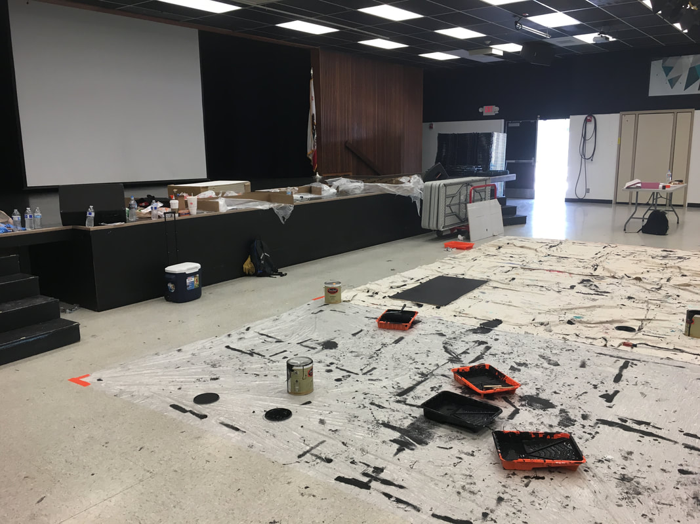
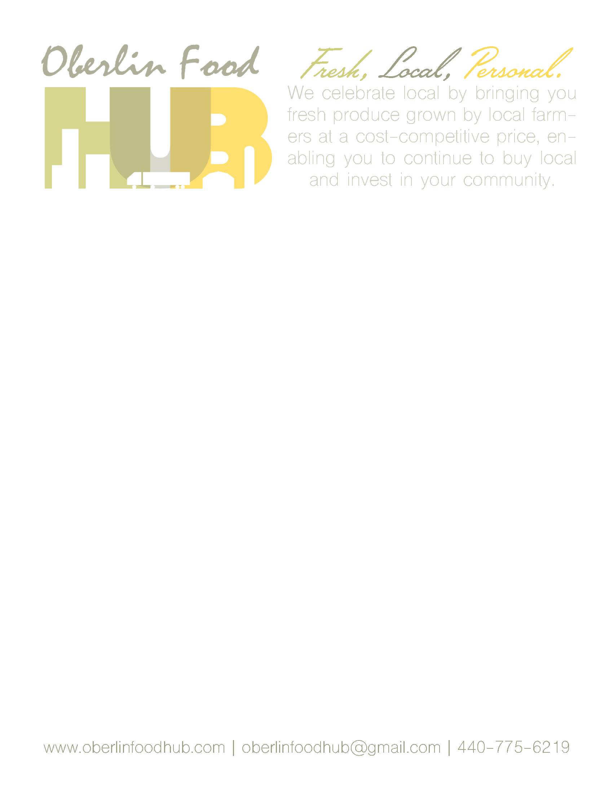

About Me | Education | Interests | Achievements & Co-Curriculars | Experience | Resume
I am an Eagle Scout and currently in my second year at UC Berkeley, majoring in Applied Mathematics with a focus in Data Science. I want to go into something finance- or data-related, but I’ve always enjoyed maths and I want to do something where I get to work with that on a daily basis. I have recently experienced an intense interest in coding, learning HTML and CSS in order to build this website, and I would like to incorporate this newfound interest into my career. Because of my dedication to my high school coursework, I will likely graduate in only 5 semester, ending with a BA in December 2019. After this point, I’m unsure of where I would like to go. One part of me would love to have the chance to continue school in the form of graduate coursework, but another wants to go straight into a career with my newfound knowledge of data science and financial systems.
Major in Applied Mathematics with a Focus in Data Science
I am currently attending UC Berkeley to earn my BA in Applied Maths, with an anticipated graduation of December 2019 and a cumulative GPA of 3.55. While studying, I am trying to also take classes that are relevant to my interest in financial systems and computer science, while also working on campus and being active in extra-curriculars. When I came to UC Berkeley, I had intended to major in Chemical Biology; that quickly changed, however, as I realized just how much math interested me. And, while watching the Data 8 lectures as a part of my position at ETS, I decided that Data Science should be the focus on my application.
Current term in italics.
In the course of my work while taking Introduction to Culture and Natural Resource Management with Dr. Kurt Spreyer, I participated in Dr. Spreyer’s research involving the development of the East Bay shoreline. As a part of this project, I used UC Berkeley’s datascience module of Python to do various analyses of the demographic changes of the East Bay. My work is published on the site we created, which can be found here.
When I took Data 8 during the summer of 2018, I was did lots of work using data sets in conjunction with the tools that I learned in the class. One sample of my work, the final project for the class focusing on classifiers (specifically k-nearest neighbors classifiers), can be fond in this zip file. I also have a sample of my writing from when I took The Classic Myths in the spring of 2018. This essay is a comparison between classic tropes in Greek mythology, specificaly the Odyssey, and a Coen Bros. film, O Brother, Where Art Thou?
As a part of my summer courses in 2018, while I was learning Python, Java, HTML, and CSS, I also took up the task of learning Latex so that I could turn in typed homework for my Discrete Mathematics class (I'm sure more than a few of you can understand the pains of poor penmanship). To showcase my skills at Latex, please see this assignment, which I wrote and submitted using Latex.
In my own free time, I used what I learned between sitting in on Data 8 lectures during my work at ETS and some studying I did for CS 88 to write a Python function that takes in a table with a filled in sudoku puzzle and determines whether or not the puzzle is solved correctly. Here is the program:
from datascience import *
import numpy as np
np.set_printoptions(threshold=np.inf)
def check_sudoku(sudoku_table):
The first few lines of code import the UC Berkeley datascience module and the module NumPy to work with arrays. The function prints a line that tells you whether or not your table is a solution, but it also returns the array collection_array, which I used while writing the program in order to determine where the faults lay in the iterations (the for loops).
I graduated from SSHS in June 2017 with a cumulative GPA of 4.38. While at SSHS, I mainly focused on my interest in the hard sciences, like chemistry, and a fondness for anatomy that fostered from growing up with a mother who was a nurse. In the 12th grade, I took an Anatomy & Physiology course wherein our final project was to write a dissection manual for the dissection of a rabbit’s respiratory system; you can view the finished product below.
I also completed a capstone project at SSHS, which was the publication of our literary magazine, Litérateur. This issue I headed was focued on Education & Education Reform, and contained works ranging student experiences in the education system to explanations of statistical predictions and recommendations for action. The issue, seen below, was a great success, and helped nurture the interest that I have in journalism and publication today.
While watching the Data 8 lectures as a part of my position at ETS, I became intrigued by the prospect of data science; I thought that it was amazing how powerful computations could be processed in seconds and how the analysis of large data sets could be performed so quickly. It was in watching these lectures and doing some experiments with the datascience module in my free time that I became enamoured with the prospect of learning coding beyond the simple aspects of datascience and NumPy. I decided to enroll in Data 8 for Summer 2018 so that I could get credit for the practice I put in while at ETS, and then I moved to CS 88.
Over the summer that I took Data 8, I worked on practice problems from past iterations of the CS 61A course (a course at UC Berkeley equivalent to Data 8 and CS 88), and I met GitHub and its webhosting platform, which inspired me to take up learning HTML and CSS on Codecademy. In a day, I had learned the basics of both languages and had this website up and running. (If you're interested, you can find the reposity for this website on GitHub.) Coding, although a relatively new interest of mine, is something that I intend to learn as much as possible about, and which I intend to pursue throughout my life.
At the end of Data 8, I found myself interested in learning more about data science. I decided to learn R, a data-oriented programming language, since it was used in most data science applications, and I also took the knowledge from Data 8 to begin working on other data sets that I could find online. As an example, for this data set from Kaggle which has information about avocado prices, I built a k-nearest neighbors classifier to classify avocados as either 'conventional' or 'organic'. This .py file (which requires the datascience and numpy Python modules and their dependencies, as well as the Kaggle dataset, to be downloaded in order to run) contains the code for the classifier; it classifies a set of avocados based on the average price, total volume, and total number of bags for that set. The test_accuracy function defined in the file showed that the 7-nearest neighbors classifier was 95.6% accurate.
As of October 19, 2016, I am an Eagle Scout. The highest award in the Boy Scouts of America, I worked my way up through seven ranks and twenty-something merit badges before completing an Eagle Scout Service Project in order to obtain this honor. The Eagle Project involved designing, funding, and completing a project to benefit a local nonprofit; my project involved repainting ceiling tiles in my high school’s MPR. You can see my project notebook (from proposal to conclusion) here.

I attended a seminar in July 2017 on communications at Oberlin College. This seminar was such and interesting experience for me: it was a chance for me to break out of my STEM-oriented coursework and to look into fields with more of a liberal arts focus. While I did decide on pursuing an Applied Maths degree, attending Foresight Prep opened my eyes to lots of different ways of communicating and gave me innumerable skills that I am confident will be a great aid in my professional life after university. Most of the class was focused on college prep and presentation skills, the latter of which I know will come into play. The final project that we completed as a part of the seminar was to develop, in groups of 3, a communications plan for a local nonprofit; my group’s nonprofit was the Oberlin Food Hub. You can see some of the work that I did below, and look at the website mockup we made at comsfoodhub.weebly.com.
This is one of the materials that I made for the Oberlin Food Hub as a part of the project. It is a template for a flier that they can use, created using Adobe InDesign in conjunction with Photoshop.

UC Berkeley Summer Sessions, September 2017 - Present
As a student assistant, customer service skills are at the crux of my responsibilities. I interact with all of the students who need assistance from the Student Services team, and so I need to effectively work with others, and be able to help alleviate the concerns of others, give information regarding different aspects of summer courses, and perform basic office tasks. I also have a few different projects; one of my most recent was developing the training materials for other student assistants, which can be found here.
UC Berkeley Educational Technology Services, January 2018 - May 2018
As an auditorium operator, I operated the camera, audio, and other technical equipment in order to facilitate the effect running of a large (700+ person) lecture. I also interact with the professors of the courses in order to understand what they need for the lecture, and to deliver information about the auditorium if it is needed. This is another position in which customer service skills are essential, since most of my interactions with the professors occur when there are technical difficulties. It was in this capacity that I sat in on the Data 8 lectures in Spring 2018 and discovered my interest in the field, which sparked the desire to change my Applied Maths focus to the subject. It is also how I learned the datascience module before taking Data 8.
Regal Civic Center 16 & IMAX, October 2015 - December 2017
As a cast member at Regal, I developed most of my customer service skills by interacting with many guests (the average attendance on the weekends was 3,500 guests per day). I assisted guests with purchases, directions, and other issues; in fact, I dealt with many power outage issues, including handling guest service (refunds, swaps, etc.) and bringing projection back online after a blackout. During my time at Regal, I took on many responsibilities outside the scope of my job description, routinely handling projects that I volunteered for in order to learn ore about operations; I even learned how to operate projection, normally a function of management!
I worked at ETS during the Spring 2018 semester, operating the booth in the back of one of the large lecture halls (which mainly involved projection, sound, lighting, and camera work). As a part of this, I would listen to lectures for classes without actually being enrolled in them. One of the classes I worked during, Data 8, sparked my interest and led to my taking the class during the subsequent summer term.
Summer 2018: This course, whose full name is "Foundations of Data Science", is the first data science course students take at UC Berkeley. It covers the basics of Python, statistical models, hypothesis testing, A/B testing, p-values, and classification, among other things. More information on this course can be found at http://guide.berkeley.edu/courses/stat/ under the STAT C8 heading.
Fall 2018: This course is a connector to Data 8, and I took it in order to suplement the information that is normally taught in CS 61A (this is the first computer science course most UC Berkeley students take; Data 8 + CS 88 = CS 61A). More information on this course can be found at http://guide.berkeley.edu/courses/compsci/ under the COMPSCI 88 heading.